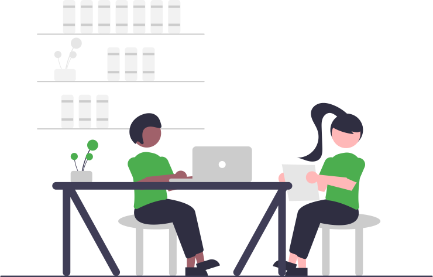

Cahier de texte
Avertissement :#

 Ce site s'adresse au groupe C des élèves de seconde du lycée Notre Dame du Mur qui suivent l'enseignement de découverte des Sciences de l'Ingénieur.
Ce site s'adresse au groupe C des élèves de seconde du lycée Notre Dame du Mur qui suivent l'enseignement de découverte des Sciences de l'Ingénieur.
Contenu de formation :#
-
Explorer à travers différentes activités courtes le domaine des Sciences de l'Ingénieur :
- simulation et expérimentation du fonctionnement de systèmes ;
- programmation de cartes à microcontrôleur ;
- modélisation et impression 3D...

Le 07/06 :#
- Prise en main de la programmation des Lego Mindstorms EV3 avec l'application : "EV3 Classroom" :
- Hello ! => expérimenter afin d'expliquer comment fonctionne la communication avec la brique depuis une tablette et depuis un PC... ;
- Moteurs et capteurs => programmer les différents capteurs et moteurs disponibles afin d'expliquer leur fonctionnement... ;
- Se déplacer => construire et programmer une base motrice afin d'expliquer le déplacement produit par les différentes instructions... ;
- Fichier > Nouveau Projet => créer une nouvelle trame de programmation personnalisée et la partager...
Le 31/05 :#
Activités :#
- Découverte de la modélisation 3D avec BlocksCAD et/ou TinkerCAD-CodeBlocks (code de la classe C8K89DHD4Y7K) ;
Prolongements pour le 07/06 :#
-
Poursuivre plus avant l'activité de modélisation 3D...
-
Finir tous les niveaux de PYRATES ;
-
Résoudre le Casse-Tête en ligne...
Le 17/05#
- Programmer une carte BBC micro:bit
Le 26/04 :#
Activités :#
Présentation de l'environnement de travail :#
- Groupe # TEAM-2SI_C-2021/2022 , email TEAM-2SI_C-20212022@ecmorlaix.fr, sharepoint TEAM-2SI_C-20212022 ;
- Dépot GitHub ;
Prise en main des notebook jupyter pour communiquer un compte rendu :#

- compléter dans un navigateur une fiche d'informations à partir de son lien basthon ;
- télécharger sur l'iPad en local un fichier copie du notebook basthon complété ;
- renommer le au format
Nom_Prenom-fiche.ipynb; - transmettre votre fichier
.ipynben pièce jointe d'un mail à l'adresse eric.madec@ecmorlaix.fr ;

- installer l'application Carnets depuis le Self Service ;
- déplacer votre fichier
.ipynbdepuis le dossierTéléchargementsvers un nouveau dossier nomméSIdans le dossierCarnets; - ouvrir votre notebook avec
Carnetspour l'augmenter...
Prolongements, à faire pour le 03/05 :#

- Découvrir plus avant les fonctionnalités de base des notebook jupyter pour améliorer votre fiche d'informations et la retransmettre par mail ;
- Finir tous les niveaux de PYRATES ;
- Lire les pages de présentation des spécialités Siences de l'Ingénieur et Numérique et Siences Informatiques...
Le 29/03 :#
Activités :#
- Evoluer de la programmation Scratch vers Python grace à l'application PYRATES : -> me transmettre par mail votre code personnel ainsi que le temps et le nombre d'essais qu'il vous faut pour passer chaque niveau... ;
Prolongements pour le 26/04 :#
- Finir tous les niveaux de PYRATES ;